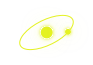

PUBLIC PROJECTS
19
현재 공개 기준으로 확인 가능한 전체 프로젝트
각각의 신호를 발견하고, 맥락으로 연결하고,
실행과 검증을 통해 지속 가능한 성장 구조로 만듭니다.
PUBLIC PROJECTS
IN PROGRESS
COMPLETED

프로젝트는 시작된 순간보다, 어떻게 연결되고
끝까지 검증되는지가 더 중요합니다.
조건에 맞는 프로젝트가 없습니다.
산업재·B2B · 헬스케어 · 모빌리티 · 뷰티 · 면세 · 숙박 · 소비재 · 여행·항공 8개 업종에서 19건을 공개하고 있습니다.
충분한 검증 기간을 거치고 고객사와 공개 범위를 합의한 뒤 성과 수치를 공개합니다.
측정 기간, 비교 기준, 데이터 출처 등 수치를 이해하는 데 필요한 기준을 안내하는 표시입니다.
사이트 주소, 개선하려는 목표, 현재 분석 환경을 알려주시면 적합한 진단 범위를 정리해 드립니다.

GEO 진단 체험